Approved Retro V2 → Production Asset Kit
Независимые production rasters и реальный isolated Canvas2D proof. Gameplay и simulation не изменены. STOP — human visual review; TEST / Production не опубликованы.
1 · Snake anatomy
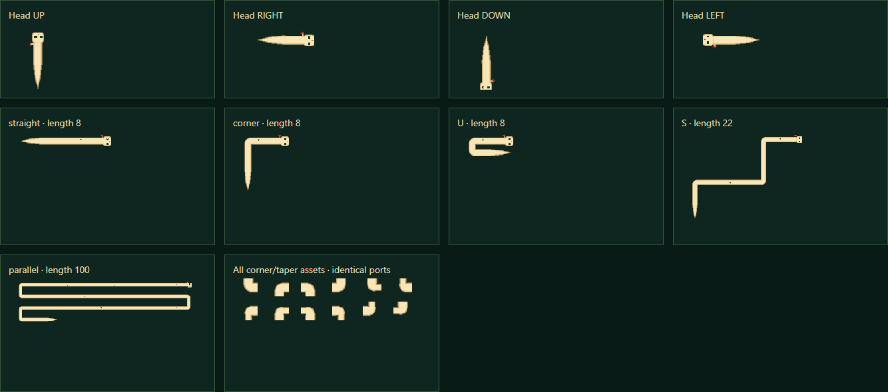
2 · Object grammar — color / grayscale
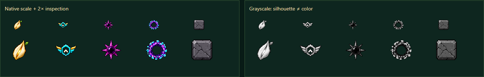
3 · Frame on checkerboard
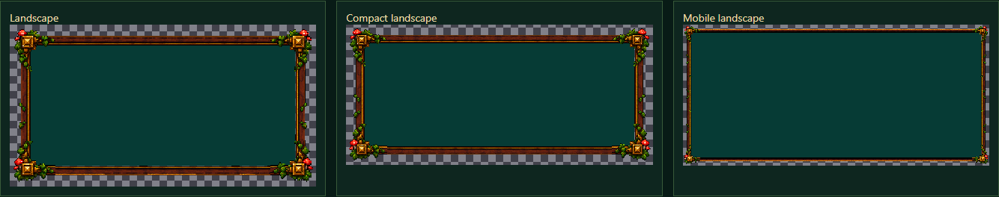
4 · D-pad normal / pressed
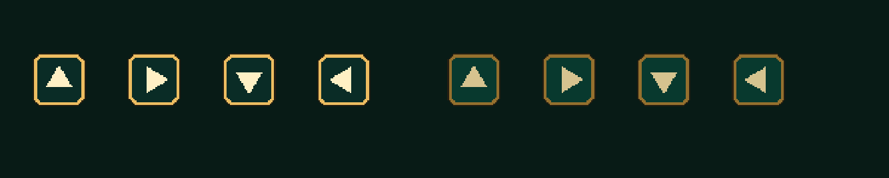
5 · Desktop embedded
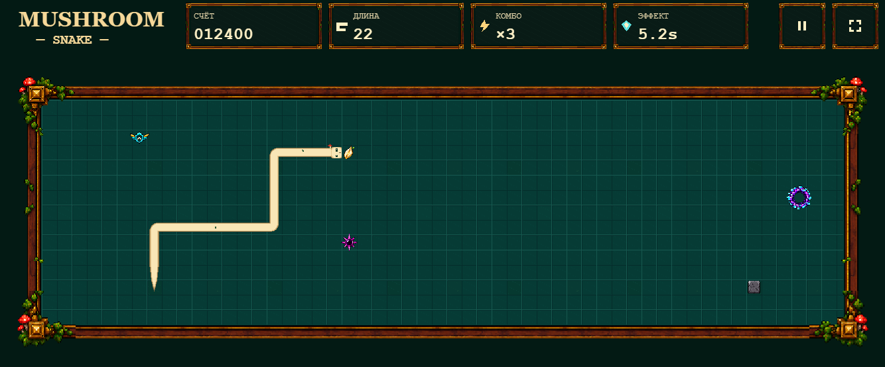
6 · Desktop fullscreen
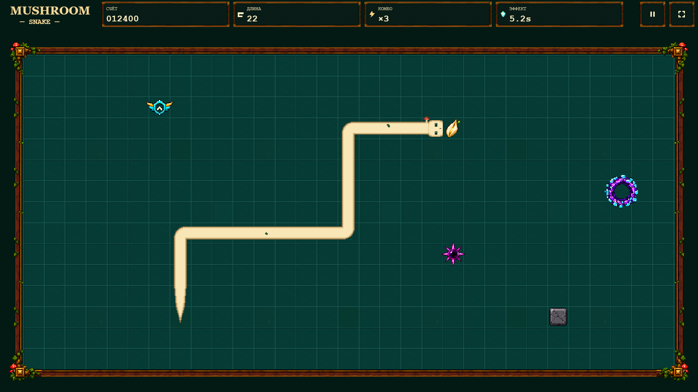
7 · Mobile 844×390 / 915×412
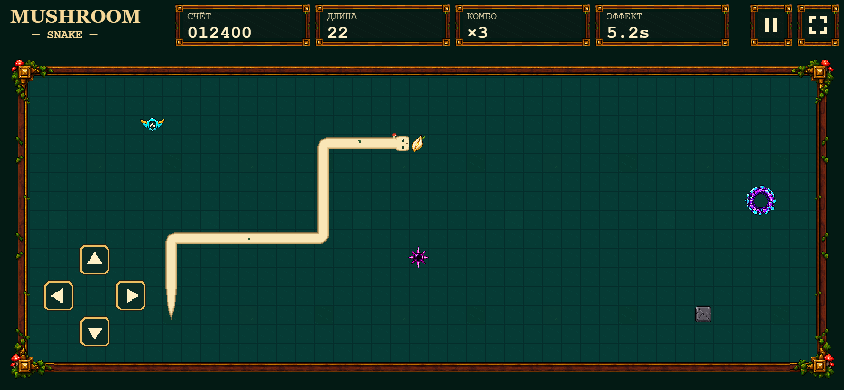
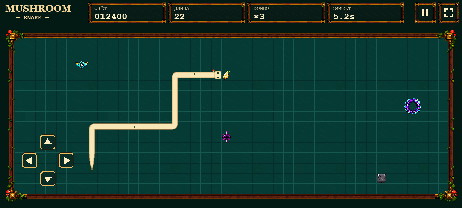
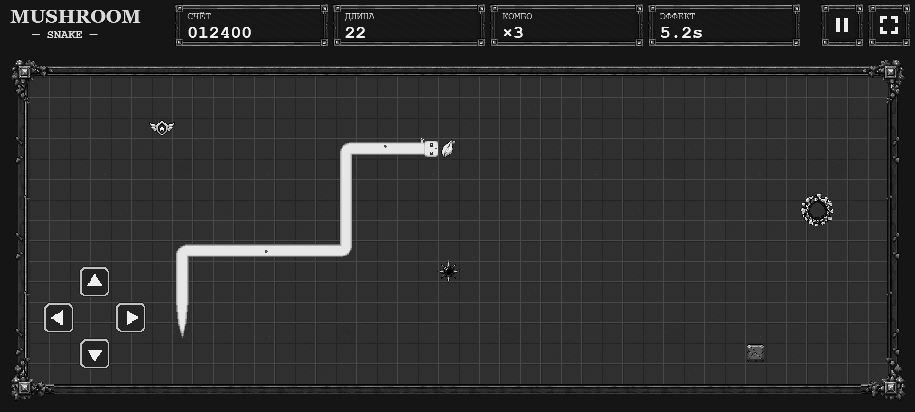
8 · Pixel QA
DPR 1 / 1.5 / 2; fractional origins; 12 / 19.25 / 32-unit cells. 6984 combinations · 382152 alpha samples · gaps = 0. 27/27 unit/regression tests. Console / warnings / network / 404 = 0.
9 · Render measurements
| Length | Desktop p50/p95/max ms | CPU×4 p50/p95/max ms |
|---|---|---|
| 8 | 0.3 / 0.5 / 0.7 | 0.3 / 3.3 / 6.5 |
| 100 | 0.4 / 0.8 / 1.7 | 0.4 / 4.0 / 6.2 |
| 250 | 0.6 / 1.1 / 2.7 | 0.7 / 4.7 / 10.5 |
| 500 | 1.1 / 1.7 / 2.5 | 1.2 / 7.2 / 11.3 |
| 1200 | 2.1 / 3.0 / 3.9 | 4.8 / 10.1 / 17.3 |
180 RAF-spaced samples after 30 warmup; actual full draw, no Snake cache. Ground p95 bottleneck 28ms removed by immutable 256² floor atlas. No extra ground backing canvas.
1200 CPU×4: max 17.3ms exceeds 16.7ms slightly; previous D.2 2ms/4ms targets are not met at 1200. This is not an unconditional performance PASS.
10 · Memory
Loaded production images ≈0.768 MiB. Total tracked mobile raster ≈5.79 MiB (844×390 DPR2) / 6.52 MiB (915×412 DPR2). No source master or duplicate resources loaded. Browser-internal GPU copies and physical-device performance remain unverified.
Additional geometry / DPR / VFX captures
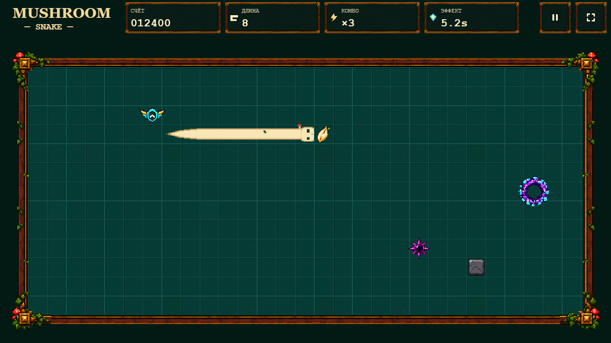
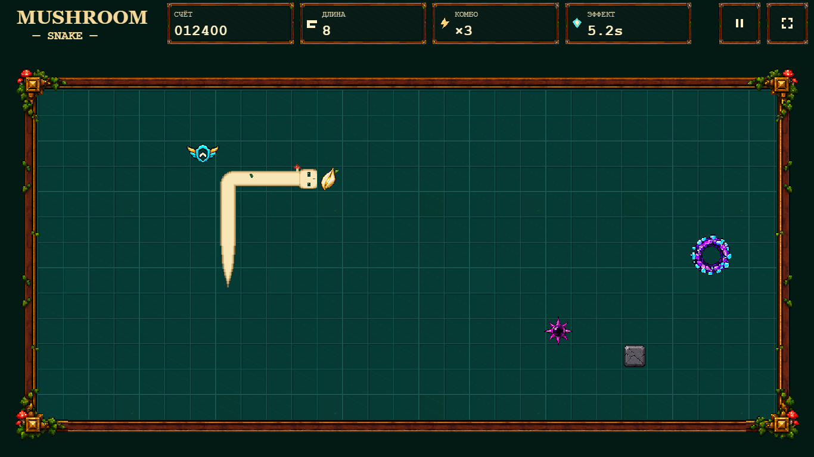
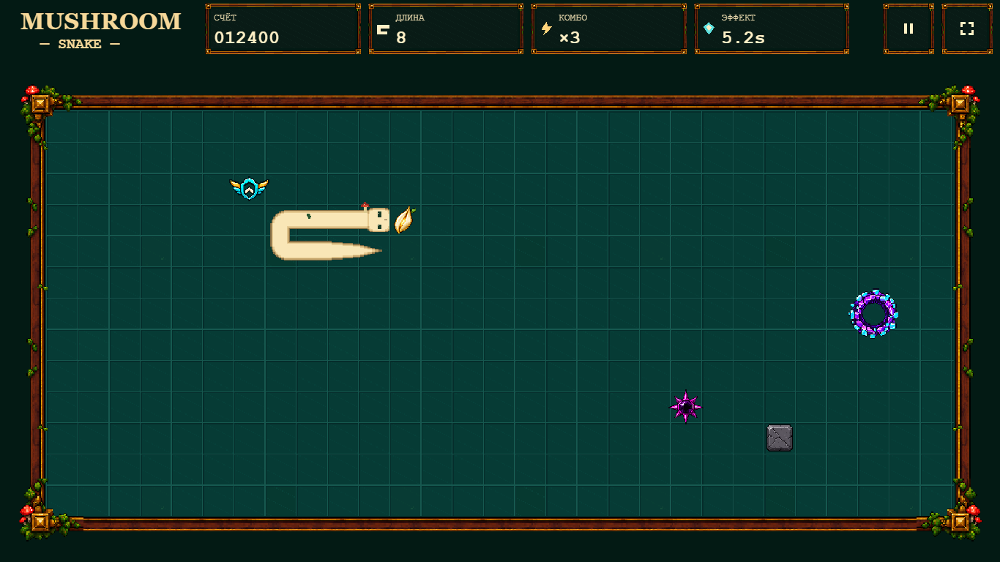
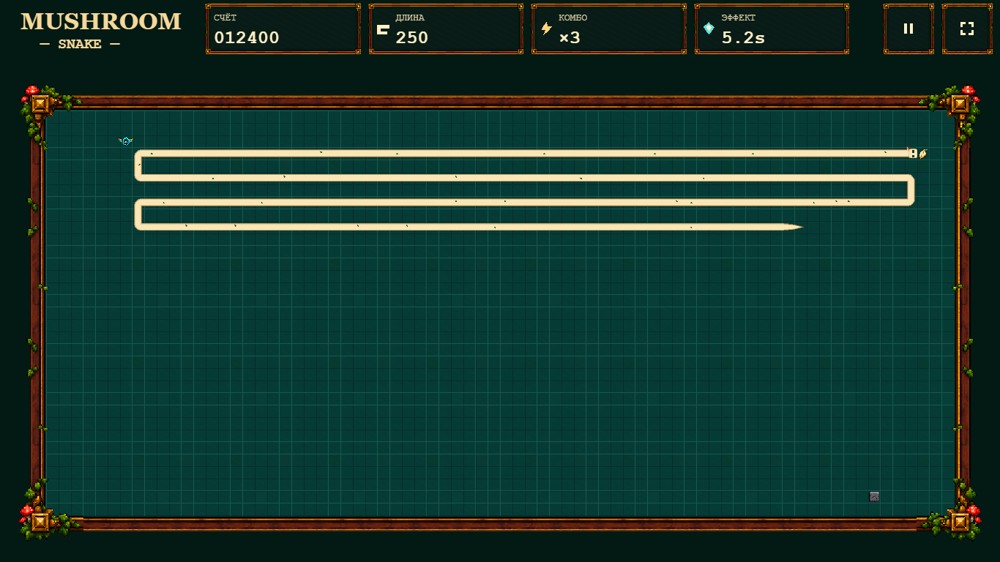
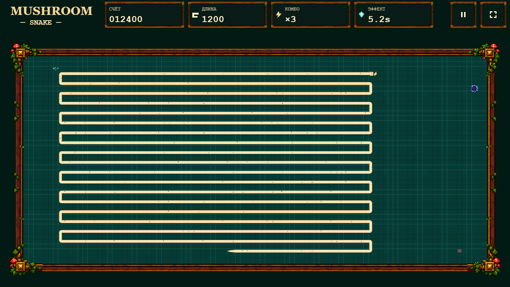
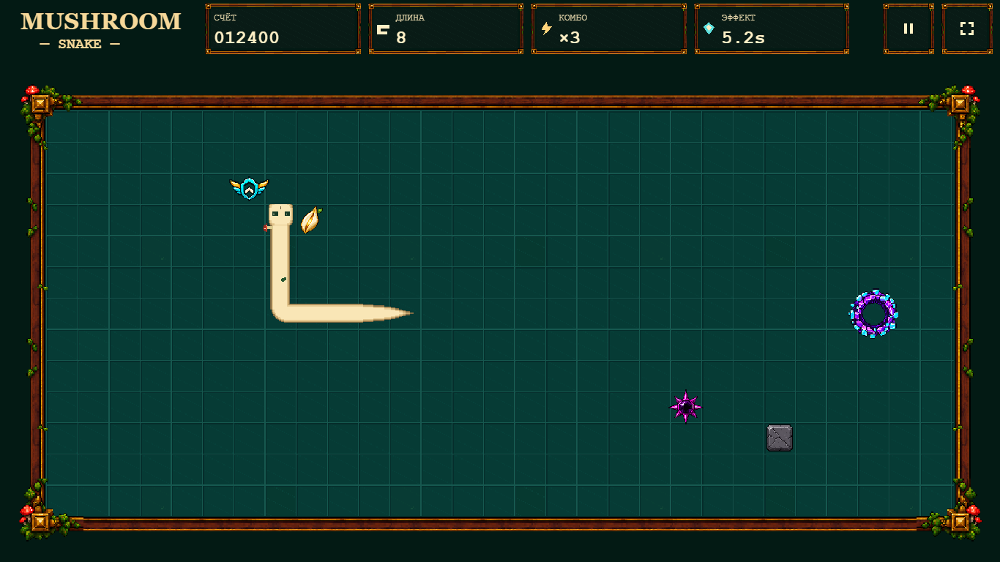

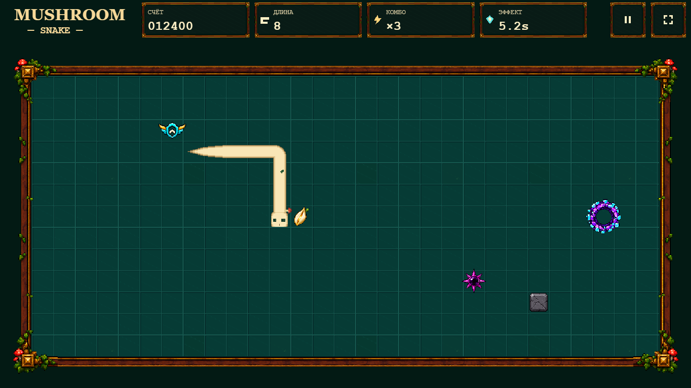
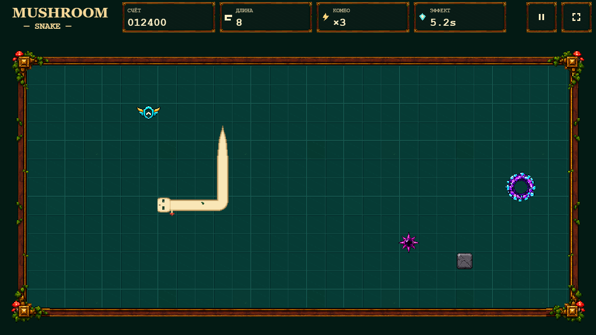

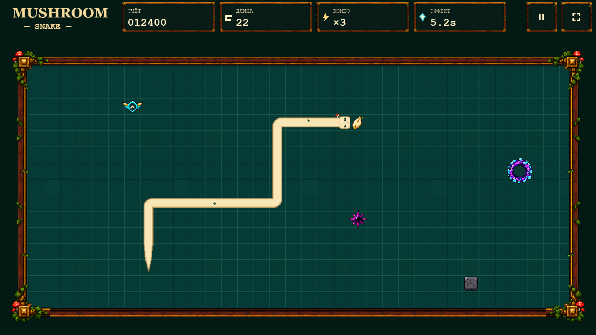
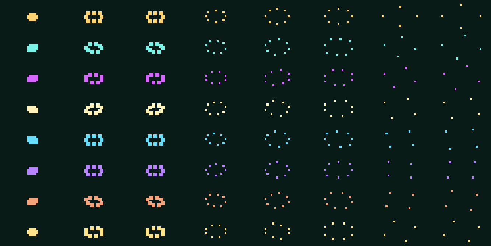
Никакой интеграции в игру до human approval. Все review screenshots — evidence, не source assets.